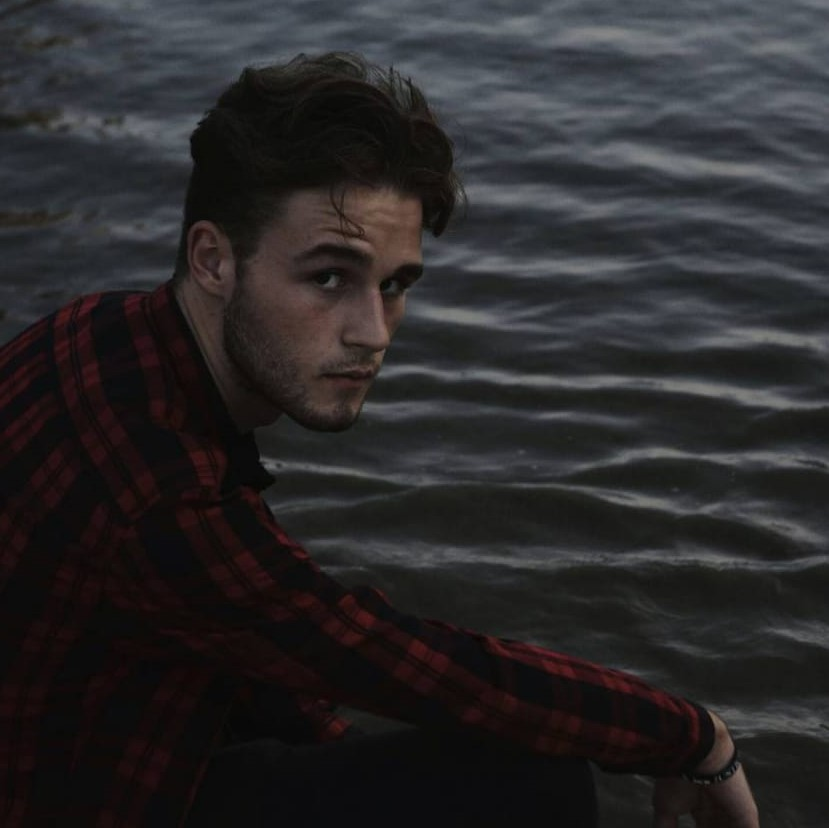

¿QUIÉN SOY?

Mi nombre es Ignacio Molina Casaus, pero podéis llamarme Nacho. Soy un estudiante de videojuegos
apasionado por el mundillo y con ganas de poder aportar mi granito a este, especializado en el
apartado de programación pero familiarizado con ciertos aspectos del apartado artístico.
Mis hobbies son el baloncesto, la música y jugar videojuegos.
HABILIDADES

- Experiencia trabajando en plazos de tiempo cortos debido a mi afición a las Game Jams.
- Gran fluidez en el inglés tras dos meses de inmersión lingüística en EEUU.
- Gran capacidad de aprendizaje en nuevos campos y tecnologías
- Principalmente programador, pero soy flexible entre las distintas tareas del desarrollo de videojuegos.